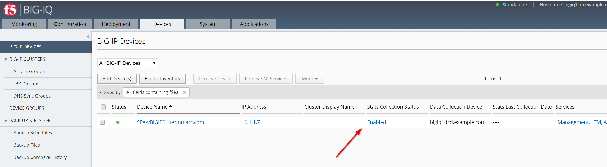

F5 BIG-IQ & Cloud Edition Lab > Class 4: BIG-IQ Platform > Module 3: Setup BIG-IQ CM & DCD manually Source | Edit on
Lab 3.2: BIG-IQ Data Collection Devices (DCD)¶
Similar to the previous lab 3.1, .ogin to BIG-IQ UI with the default passwords (admin/admin) and go through the setup wizard.
Use bigiq1dcd.example.com for hostname, 10.1.10.6/24 for self-ip, time.nist.gov for NTP server and Thisisthemasterkey#1234 for master key.
When going through the SYSTEM PERSONALITY screen, make sure you select the BIG-IQ Data Collection Device

Note
The master key needs to be the same between the BIG-IQ CM and DCD(s).
Once the DCD is initially provisionned, let’s establish connectivity with BIG-IQ console node (BIG-IQ CM).
Log in to the BIG-IQ Console Node (10.1.1.4 admin/admin)
Under System > BIG-IQ DATA COLLECTION
Select BIG-IQ Data Collection Devices
Click the Add button

Add the DCD Management IP Address (10.1.1.6), Username admin, Password purple123, and the Data Collection IP Address (self-IP: 10.1.10.6). Data collection port default is 9300. Click the Add button in the lower right of the screen.
{kind=link}
Note
Adding the DCD will take a minute or two.
DCD item in UI displayed.
Status – State indicator. Green (UP) | Yellow (Unhealthy) | Red (Down)
Device name – Hostname of DCD (data collection device)
IP Address – IP Address of interface used for data collection.
Version – Software version of BIG-IQ DCD (data collection device)

Add Services to the new DCD Device by clicking the Add Services link under the services column
{kind=link}
Activate the Access, FPS, and Web Application Security stats. Make sure the Service Status is Active (each click may take a minute to register)
Now, let’s add a BIG-IP in BIG-IQ and enable the statistics collection for this device. You can add Seattle BIG-IP, 10.1.1.7, Username admin, Password purple123.

For devices that were discovered before you added the DCD, you can now enable the statistics collection for those devices by going on the Devices tab and click on the “Disabled” link under Stats Collection Status.
Click the Enabled button, accept the defaults, and click the Save & Close button in the lower right.

Note
The zone must match a zone set to a DCD. The BIG-IPs in a zone will send statistics only to the DCDs in the same zone (new from 6.1 release)
The Stats Collection Status field will go to “Task running…” while the statistics collection iApp is being installed on the target device.
{kind=link}
Come back later to check out the new statistics capabilities.